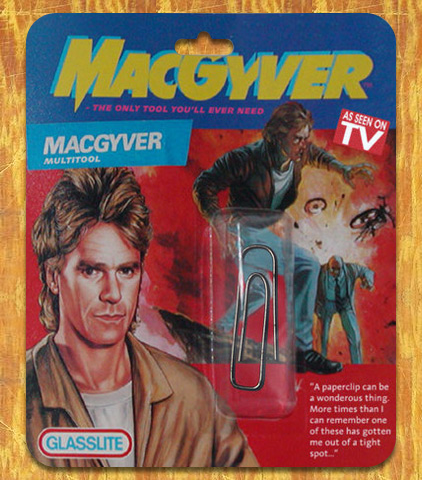
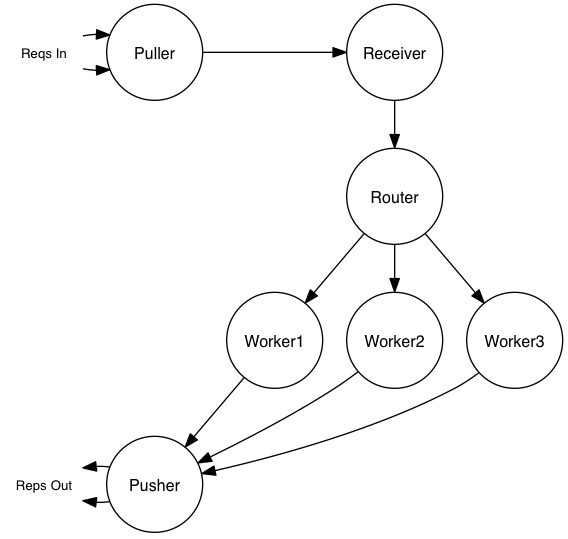
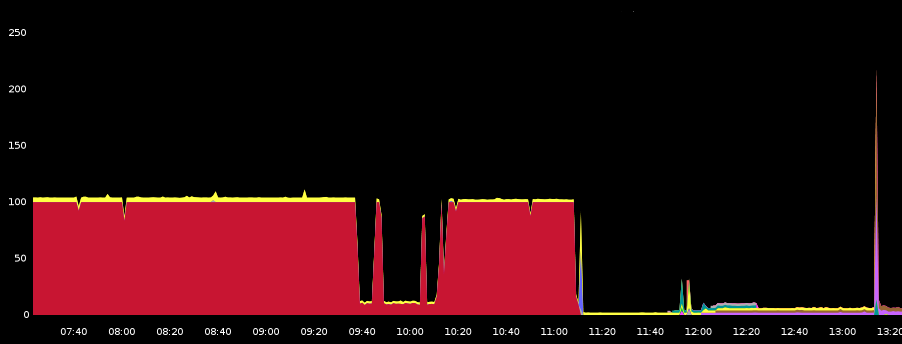
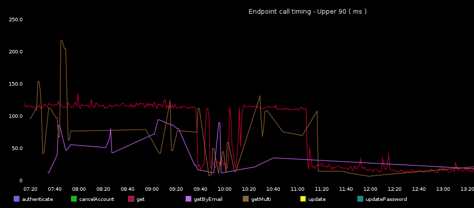
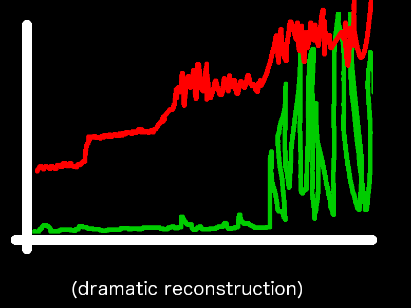
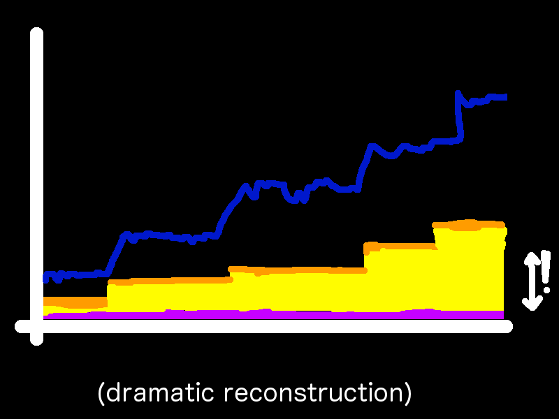

Debugging from the outside → in
Edd Steel
@eddsteel
SOA at HootSuite
- LAMP → SOA
- Lots of new Scala code
- Lots of new Akka code
- Production-ready means something
- (we're hiring!)
OH at the reactive meetup

What sucks about this stuff?
The tooling isn't there yet.
- IDE support
- profiling, debugging
- distributed systems are hard.
Does it work?
Does it work?
- Compiler
- Static Analysis
- Unit Testing
- Property Testing
- Integration Testing
OK, But does it work?
Test the whole system
- Load testing
- Profiling
- Typesafe Console
- Log analysis
Problem 1
tool's view != dev's view
- Actors and Futures not threads
ActorSystem-akka.actor.worker-dispatcher-3
- Message-passing components and anonymous functions
Module$InnerModule$Foo$$anonfun$bar$1$$anonfun$apply$1.apply(<console>:10)
- Once our system is made to work with the tools, is it still the same system?
Problem 2
This isn't very agile.
Dev → Vagrant → Staging → Load Testing → Production
Problem 3
- SOA pushes system integration to deploy time.
- It's still your problem.
Plugging the gaps
We need a tool that will
- work in production, without impacting performance
- provide a central view of a distributed system
- Organise information flexibly
- Tell us, at a minimum
- Did X happen and where?
- How often?
- How long did it take?
- What was the impact?
???
MVP
Monitoring utilities?
- Requirements sound like characteristics of our monitoring utilities
- 3 flavours
- Alerts
- Graphs
- Aggregated logs
Graphs
Killer App: tracking metrics
- Build dashboards that show key system metrics
- execution time
- request count
- coffee supply
- See impact of code changes
- Monitor outages, early warnings
Graph stack
- statsd-client/ diamond
- statsd
- graphite
- graphite dashboards
Statsd/Graphite Features
- UDP and sampling from multiple sources
- counters, gauges, timing (mean/ 90th percentile/ 99th percentile)
- hierarchical data series
{system}.{host}.{actor}.{function}.time
- aggregation, combination, calculation
Log aggregators
Killer app - logging exceptions
- Post mortems
- User tracing across systems
- rare, obscure bugs
- edge cases and exotic browser/OS/device combinations
- generate test data
Log stack
- udp-logger
- logstash
- elastic search
- kibana
- hadoop
Elastic Search features
- UDP support from multiple sources
- schemaless, structured messages + search
- map/reduce batch jobs
So, monitoring utilities?
- both work in production, without impacting performance
- provide a central view of a distributed system
- organise information flexibly
- Graphing X shows
- if it happened
- where (if that's in the key)
- how long it took
- how the system looked at the same time.
- Logging X shows
- if it happened
- where (if it's part of the message)
- the context
- trends around X (kibana or hadoop)
Graph Example I
Our System
The Metric: Execution time
- System was underperforming with low load
- Performance improved when we increased load
- Testing showed no issue with receiving across two sockets
- Requests In matched Responses Out
A Clue
 puller to receiver slice is large
A Clue
 minimum time, at low load was about the same as socket timeout
The Hypothesis
- waiting for both sockets to have requests, instead of reading and processing off whichever had work.
- big improvement in clarity
some part of the system is causing delays- there's a bug in our polling code
Log Example I
service client logs how many service calls are made in a web request


A process emerges
Our "process"
- Identify a metric (or add one)
- Find a clue
- Form a hypothesis
- Fix and watch the metric change (else repeat)
Graph Example II
Example 1: The Metric
- request timeouts increased when load increased
- sudden change
- cause unclear
A Clue
 size of request batches correlated, increased
A Clue
 problem when upper time b/w puller and worker == request timeout
Hypothesis
- bug: no cap on request batch size
- first requests in batch timed out before the batch was sent.
Log Example II
- DB replication during rollout
- PHP and scala systems, old and new DBs, tungsten replicator to sync them
- Soft-launch
- percentage use new then old (and skip replication)
- rest use just old (and replicate)
Progress of an update through old and new systems
The kinds of questions we've been asking and answering
- what's my workload distribution like?
- what's the best number of workers for this traffic level?
- which part of our pipeline is the bottleneck?
- did my config change have the desired effect?
- are my actors keeping up with their work?
- are those lost messages due to a bug or poor performance?
- are my assumptions correct? Does x affect y?
- did the last two weeks of work actually make things better?
Not to mention
- Is twitter down?
- Did someone redeploy?
- Is instance 2 amazony today?
Guidelines
The regular rules apply
- don't fix what you haven't measured
- don't prematurely optimise
- test your assumptions
- remove noise
Organising metrics
- record fine-grained, then aggregate
requests.*.endpoint1/requests.host1.*
Misc.
- sample if necessary.
- system stats are useful
- combine graphs to demonstrate correlation
- graph significant external events
- graph history
What sucks about this stuff?
- It's a paperclip
- The graphite UI can suck
- UDP can suck
udp-logger is open source (Apache)
- https://github.com/hootsuite/udp-logger
- Back end for log4j and slf4j
- Built in DNS SRV record support for discovery of logstash
- You'll still need to format your messages usefully.
- typesafe config
statsd-client is open source (Apache)
- https://github.com/hootsuite/statsd-client
- Wrapper for etsy's statsd client
- More idiomatic/ lower-profile
- typesafe config
val callParent = monsters exists { m => timed(s"monster-check.${checker}.$m") { checkUnderTheBed(m) } }
Thanks!
- Edd Steel
@eddsteelcode.hootsuite.comgithub.com/hootsuite